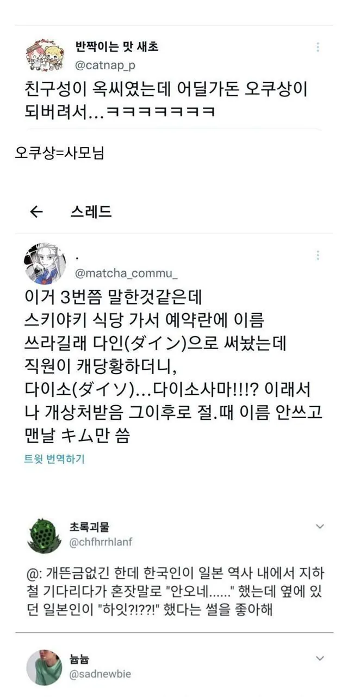
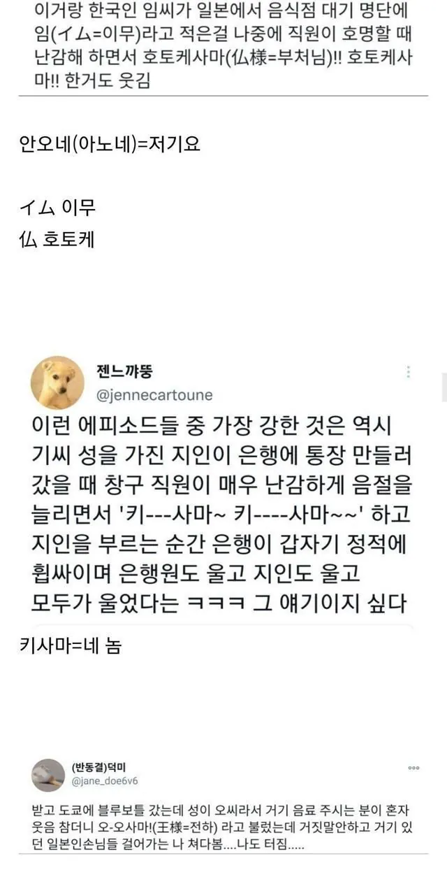

나도 이생각했는데 ㅋㅋㅋㅋㅋ
킷!사마~~~~~~~~~~~~~~~~~~!!!
일본어 모르지만 다인이랑 다이소는 거의 다른게 없는데 어떻게 구별함
저 마지막 단어가 다른거긴한데 비슷하게 생겨서 ㅋㅋㅋㅋㅋㅋ
못 함
ㅋㅋㅋㅋㅅㅂ
획 방향이 미묘하게 다름
잘 보면 구분가능함 ン은 위에 점 찍고 밑에서부터 올려서 쓰는거고 ソ은 위에 점찍고 위에서 밑으로 내려서씀
y에 가까워 보이는게 소 임
한자도 日 曰 이렇게 비슷한건 있긴 해도 저 일본어는 걍 펜으로 쓰면 구분이 안될 수준이네 일상에 지장있는 수준 아니냐
글쎄 일본인이 아니라서 나도 잘 모르겠는데 알아서 말이 되는 단어로 해석해서 쓰지않을까? ㅋㅋㅋ
쓰다보면 '와'랑 '워' 수준의 차이라서 구별이 감.
ソ는 세로로 길어지고 ン은 가로로 길어짐.
하지만 그런거 구별없는 외국인 필체는 답이 없죠.
펜으로 쓰는게 더 확실히 구분됨
다 이 ㄴ 으로 썼는데 ㄴ 이랑 소 랑 잘못쓰면 비슷하게 보임
임씨는 이무사마나 호토케사마나 인외존재네 ㅋㅋㅋ
안오네 저거는 볼 때마다 웃기네 ㅋㅋㅋㅋㅋ
카페에서 영어타자 개 빠른 외국인 보고 와쩌네 했더니
마이네임이즈마이크 했다는 썰 만큼 웃김 ㅋㅋ
ㅅㅂ 이게.더 웃기네 ㅋㅋㅋㅌㅌㅋ
ㅋㅋㅋㅋ 먼가 했더니 와 츄얼 네임으로 들린거야? ㅋㅋㅋㅋ
ㅋㅋㅋㅋㅋㅋ
기씨성 얘기는 좀 아쉽네. キ ギ 2개가 엄연히 다를텐데... 아마 한국인이 까먹고 똔똔 안했겠지?
기씨 표기를 ki나 kee로 써서 그런갑봐
김을 kim으로 써서 키무상 이라고 부르는 처럼
ㄴㄴ 기는 キ가 맞음 표기법상
우리나라 표기법에서 타나카가 다나카 되는것 처럼
일본 표기법은 김밥> 킨파, 잡채>챠푸채 처럼 강한 발음이 되어버림
오히려 ギ를 한국발음으로 옮기면 콧소리를 섞어서 (응)기 에 가까움
응기잇이랑은 상관없음
신애(시네 ; 죽어라)
그럼 일본에선 테러리스트 고트를 전하빈라덴이라고 불렀던거야??하하하하